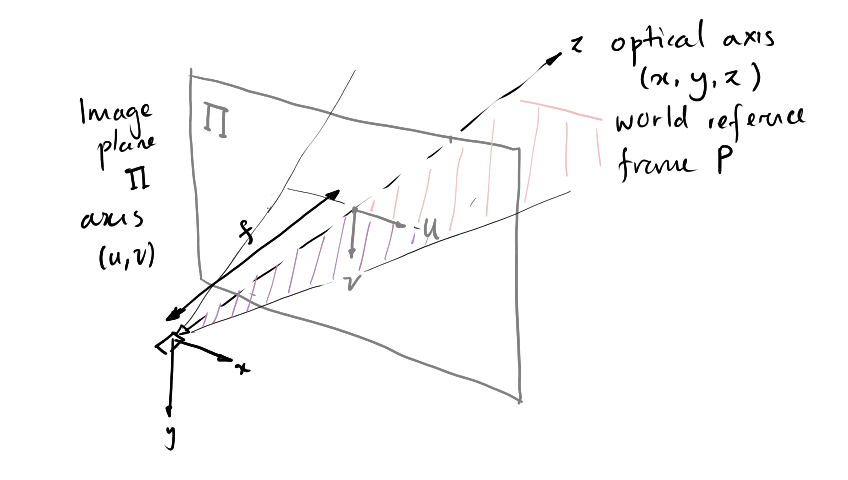

[1] Describe the layers in the sensing process -- which one is most important for decision making?
The five stages:
* Transducer (converting physical quantity to electric signal)
* Signal Conditioning (preprocessing)
* Computer interface
* Modelling
* Perception
Perception is directly responsible for decision making, but it bases its decisions on each of the previous layers.
[2] State 4 main characteristics of sensors. (There are more than 4)
A popular device for controlling the position and speed of wheels and other motor-driven parts. Wheel movements can be used to get an estimate of position/distance.
Simple and widely accessible.
However, because they are internal, their estimation of position is in reference frame of the robot and may not best reflect what is actually going on, which may cause errors.
[4] A robot tries to move to landmark C using triangulation. Suppose the robot moves from A to B, travelling distance \(l_{AB}\), if angles \(\alpha, \beta\) are known, work out \(l_{AC}, l_{BC}\)
[5] What type of sensors may be required for an autonomous patrol security car around a university campus?
Any sensor + suitable justification, e.g. Lidar sensor to detect objects around it, and make sure it is not running into any obstacles/people/staying on the road.
**[6]** Stereo cameras are able to detect depth. Suppose you have a stereo camera with focal length
$f$ (in pixels, for both left and right cameras), and baseline $b$. For a given point $(x, y, z)$ in
the world, suppose its image coordinates along the $u$ direction are $u_l$ and $u_r$ (in pixels) in
the left and right images respectively. Derive the depth $z$.
Given figure
Similarity of triangles, means that $\fr{z}{f} = \fr{x}{u_l}$.
* i.e the distance across the camera fov $u_l$ ratio the focus length is the same as the ratio of the real world $x$ to the real distance $z$
Thus $z = f \cdot \fr{x}{u_l}$, and we want to find $\fr{x}{u_l}$ in terms of $u_l, u_r$ (as $x$ is another unknown).
\begin{align}
\fr{x}{u_l} &= \fr{x-b}{u_r} \\
(x-b)u_l &= xu_r \\
xu_l - bu_l &= xu_r \\
u_r &= u_l - b\fr{u_l}{x} \\
b\fr{u_l}{x} &= u_l - u_r \\
\fr{x}{u_l} &= \fr{b}{u_l - u_r} \\
\therefore z &= f\fr{b}{u_l - u_r}
\end{align}
**[7]** Explain the workflow of the Canny edge detecting algorithm (from the original image to the detected edges). For each step, explain (i) why it is needed, and (ii) what is the result of this step.
The steps go as:
1. Image smoothing to reduce noise
2. Compute image gradients, including magnitude and direction, for edge detection
3. Use non-maximum suppression to get rid of thick edges
4. Do hysteresis thresholding to keep the strong edges, and join broken edges together using weaker edges from a weaker threshold image.
**[8]** List three ranging sensors that might be useful for self-driving cars, and explain their advantages and limitations.
Ultrasonic sensors: they are cheap, but accuracy depends on the reflective properties of surfaces, and are range limited.
Stereo vision sensors: accurate, but not robust in extreme environments, such as having motion blur in fast-moving situations.
LiDAR: accurate, long range, but expensive
**[9]** Self-driving cars often use GPS to determine their locations. Explain how GPS works, and possible ways to improve its accuracy.
GPS uses 4 satellites to determine positions via trilateration. In particular, for GPS, accurate positioning relies on accurate timing. However, receiver clocks are much less accurate than atomic GPS clocks.
Therefore, the 4th satellite is use to correct error caused by time: ideally the fourth sphere would intersect with all three other spheres in one exact location. Possible ways to improve accuracy including using differential GPS, or incorporating other sensor data.
**[10]** Suppose that there are three basestations with known coordinates P1 $(0, 0, 0)$, P2 $(d, 0, 0)$ and P3 $(i, j, 0)$. The robot is able to measure the distances with respect to the three stations, $r_1$, $r_2$ and $r_3$. Derive expressions to estimate the position $(x, y, z)$ of the robot.
We can model the distance to the three stations as spheres:
\begin{align}
r_1^2 &= x^2 + y^2 + z^2 &\pod{1}\\
r_2^2 &= (x-d)^2 + y^2 + z^2 &\pod{2}\\
r_3^2 &= (x-i)^2 + (y-j)^2 + z^2 &\pod{3}
\end{align}
We solve for $x$ using (1) and (2):
\begin{align}
r_1^2 - r_2^2 &= 2xd - d^2 \\
x &= \fr{r_1^2 - r_2^2 + d^2}{2d}
\end{align}
Solving for $y$:
\begin{align}
r_3^2 &= x^2 - 2ix + i^2 \; + \; y^2 - 2yj + j^2 + z^2 \\
r_3^2 &= r_1^2 -2ix +i^2 - 2yj + j^2 &\pod{\rm{replacing }x^2 + y^2 + z^2} \\
2yj &= r_1^2 - r_3^2 + i^2 +j^2 -2ix & \pod{\rm{rearranging}}\\
y &= \fr{r_1^2 - r_3^2 + i^2 + j^2}{2j} - \fr{i}{j} x
\end{align}
Solving for $z$:
\begin{align}
r_1^2 &= x^2 + y^2 + z^2 \\
z &= \pm \sqrt{r^2_1 - x^2 - y^2}
\end{align}
**[11]** For the three images in Fig. 3, explain the characteristic of the following $M$ matrix:
$$
M = \begin{bmatrix}
I_x^2 & I_x I_y \\ I_x I_y & I_y^2
\end{bmatrix}
$$
where $I_x$ and $I_y$ are the image gradients along $x$ (horizontal) and $y$ (vertical) directions.
Let the eigenvalues of $M$ be $\lambda_1, \lambda_2$.
* For a, $\lambda_1 \gg \lambda_2$ (edge)
* For b, $\lambda_1 \approx \lambda_2$ and they are both small
* For c, $\lambda_1 \approx \lambda_2$ and they are both large
**[12]** Perspective projection maps a 3D scene point, $P = (X, Y, Z)$ to a 2D image point, $p = (x, y, f)$, where f is the focal length of the camera. Explain how perspective projection works under homogenous coordinates.

Perspective projection maps a 3D point $P = (X,Y,Z)$ in the scene to a 2D image point $p=(x,y,f)$ where $f$ is the focal length.
Because it's perspective, and so the projection triangles are similar, we get
\begin{align}
\fr{f}{Z} &= \fr{x}{X} = \fr{y}{Y} \\
x &= f\fr{X}{Z} \\
y &= f\fr{Y}{Z}
\end{align}
Projective geometry also has an extra dimension $W$, making a four-dimensional coordinate system called homogenous coordinates.
The fourth dimension is a scaling transformation for the 3D coordinate. The $X,Y,Z$ are "correct" when $W=1$. This can be done by dividing all coordinates by the non-one value of $W$.
$$
\begin{bmatrix}
f_x \\ f_y \\ z
\end{bmatrix}
=
\begin{bmatrix}
f & 0 & 0 & 0 \\
0 & f & 0 & 0 \\
0 & 0 & 1 & 0
\end{bmatrix}
\begin{bmatrix}
X \\ Y \\ Z \\ 1
\end{bmatrix}
$$
They are, in turn:
* A sharpen filter (emphasises pixel values in the middle)
* Gradient filter (one side has a positive, one side has a negative)
* Diagonal edge detector (singe line of 2s diagonally)
* Gaussian filter
**[14]** The canny edge detector typically uses non maximum suppression to obtain thin edges. Explain how the non-maximum suppression technique works. With the proposed edge candidates how would you recover as many valid edges as possible?
Non-maximum suppression picks the point on the line with the maximum gradient, and discards all other pixels.
**[15]** Explain the workflow of the SIFT feature extraction algorithm (from the original image to the detected features). For each step, explain why it is needed and what is the result of this step.
SIFT
* constructs scale space to ensure scale invariance
* computes the difference of gaussians to extract second order gradient information
* find the extrema in the difference of gaussians to locate points of interest
* filter edges and low contrast points to remove noise
* assign orientations to ensure orientation invariance
* build key point descriptor for feature matching.
Discrete Filter
Not gonna lie, these take ages to write down.
Here are the links you need a warwick account.
[Questions](https://moodle.warwick.ac.uk/pluginfile.php/2577424/course/section/445538/Seminar_B__State_estimation_and_Discrete_Filter.pdf) /
[Answers](https://moodle.warwick.ac.uk/pluginfile.php/2577424/course/section/445538/Seminar_B__State_estimation_and_Discrete_Filter_Solutions.pdf)
Gaussian Filters
Here are the links you need a warwick account.
[Questions](https://moodle.warwick.ac.uk/pluginfile.php/2577424/course/section/445539/Seminar_C__Gaussian_Filters.pdf) /
[Answers](https://moodle.warwick.ac.uk/pluginfile.php/2577424/course/section/445539/Seminar_C__Gaussian_Filters_Solutions.pdf?time=1676451120461)